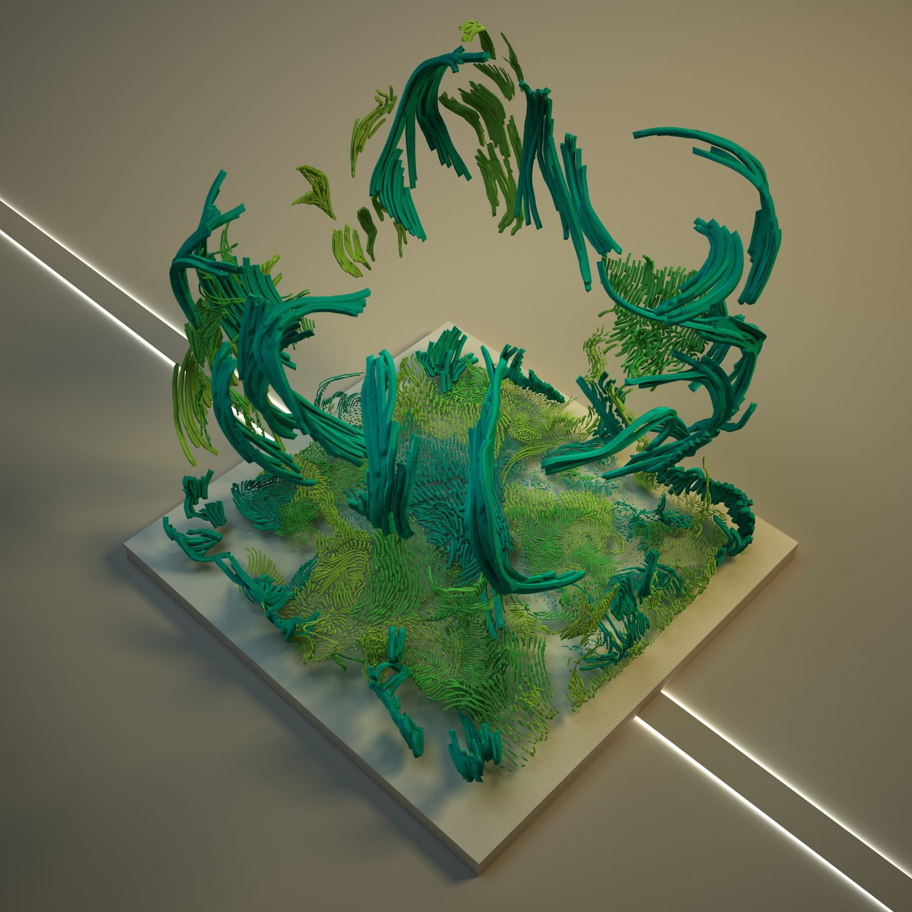
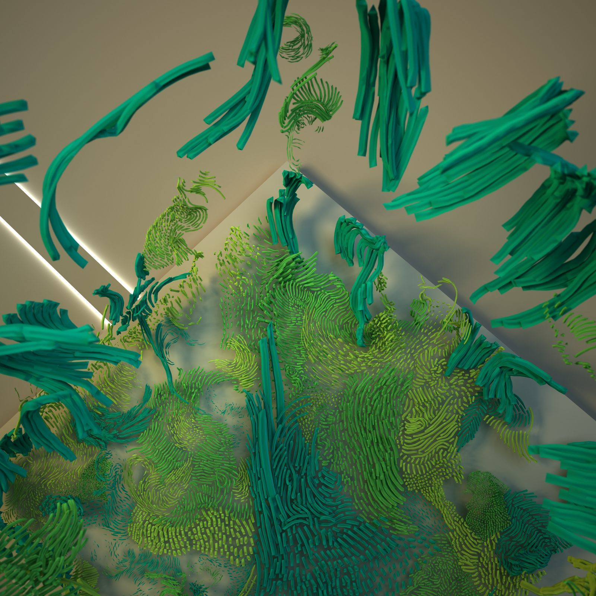
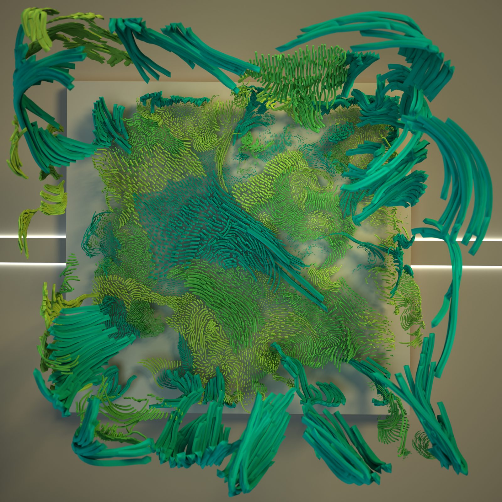
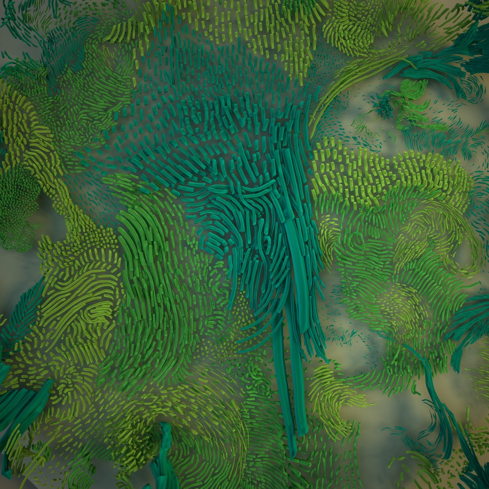
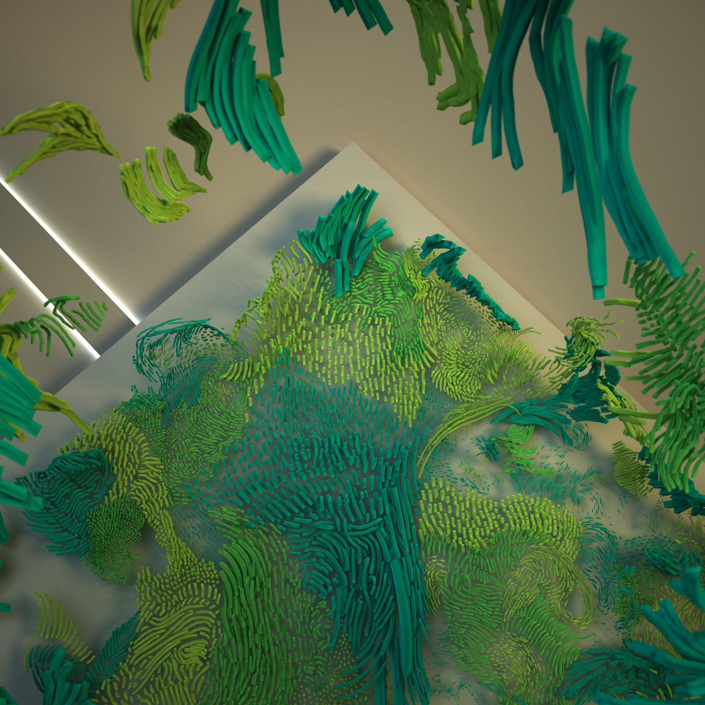

A contemplative room inspired by vegetation and lush nature. The materiality of floor, walls, and ceiling deconstructs into a new type of matter only possible in virtual space.
Une salle contemplative inspirée par la végétation et une nature luxuriante. La matérialité du sol, des murs et du plafond se déconstruit en une nouvelle forme de matière, possible uniquement dans l’espace virtuel.
OASIS (originally titled Metaverse Room) is a digital garden prototype that explores what happens when the conventions of architectural space dissolve into organic growth. The room begins as a simple rectangular volume (floor, walls, ceiling), but its surfaces are progressively consumed by hand-sculpted vegetation: grasses, flows, tendrils, and bulbous forms that erupt through the boundaries of the room and spill into the surrounding void.
OASIS (d’abord intitulée Metaverse Room) est un prototype de jardin numérique qui explore ce qui advient lorsque les conventions de l’espace architectural se dissolvent dans une croissance organique. La salle débute comme un simple volume rectangulaire (sol, murs, plafond), mais ses surfaces sont peu à peu envahies par une végétation sculptée à la main : herbes, coulées, vrilles et formes bulbeuses qui percent les limites de la salle et se répandent dans le vide environnant.
The piece was shown at the Museum of Other Realities and later presented at Art Toronto 2019 by Galerie ELLEPHANT. By placing the majority of the sculpture’s detail on the ground plane, the work encourages visitors to crouch, sit, and inhabit the space at the level of the grass, a disarming posture that many visitors embraced, especially when being observed in a crowd.
L’œuvre a été montrée au Museum of Other Realities, puis présentée à Art Toronto 2019 par la Galerie ELLEPHANT. En concentrant l’essentiel du détail de la sculpture au niveau du sol, l’œuvre invite les visiteurs à s’accroupir, à s’asseoir et à habiter l’espace à hauteur d’herbe : une posture désarmante que bien des visiteurs ont adoptée, surtout lorsqu’ils se savaient observés au sein d’une foule.
Metaverse architecture reflects the possibilities afforded by the internet and 3D digital technology. In VR and AR, the materiality of the floor, walls, and ceiling can be deconstructed into a new type of matter, one that would have been impossible to experience as a lived space before the advent of these technologies.
L’architecture du métavers reflète les possibilités qu’offrent Internet et la technologie numérique 3D. En VR et en RA, la matérialité du sol, des murs et du plafond peut se déconstruire en une nouvelle forme de matière, impossible à éprouver comme espace vécu avant l’avènement de ces technologies.
The garden mixes thoughts of water, grasses, flowers, and flows. Each stroke of the VR controller adds another blade, another tendril, another gesture of growth. The accumulation produces a surface quality that is simultaneously digital and deeply organic. A landscape that reads as living despite being entirely hand-made.
Le jardin mêle des évocations d’eau, d’herbes, de fleurs et de courants. Chaque geste de la manette VR ajoute un brin, une vrille, un élan de croissance de plus. L’accumulation produit une qualité de surface à la fois numérique et profondément organique. Un paysage qui se lit comme vivant bien qu’il soit entièrement fait à la main.

By placing the majority of the detail on the ground, visitors experience the environment as if sitting in the grass. Disarming for many, especially when being observed in a crowd.
En plaçant l’essentiel du détail au sol, les visiteurs éprouvent l’environnement comme s’ils étaient assis dans l’herbe. Désarmant pour plusieurs, surtout lorsqu’on se sait observé au sein d’une foule.


OASIS was first exhibited at the Museum of Other Realities, the social VR platform whose architecture Samuel was simultaneously designing. The piece later travelled to Art Toronto 2019, where it was presented by Galerie ELLEPHANT, one of the first times a hand-sculpted VR environment was shown at a major Canadian art fair.
OASIS a d’abord été exposée au Museum of Other Realities, la plateforme sociale VR dont Samuel concevait simultanément l’architecture. L’œuvre a ensuite voyagé jusqu’à Art Toronto 2019, où elle a été présentée par la Galerie ELLEPHANT : l’une des premières fois qu’un environnement VR sculpté à la main était montré dans une grande foire d’art canadienne.
The project represents a transitional moment in Samuel’s practice: the shift from designing architectural containers for art (the Museum of Other Realities, the VR Church) to creating the art itself. The sculptural language developed here, filling architecture with organic growth, would be refined across subsequent projects.
Le projet marque un moment charnière dans la pratique de Samuel : le passage de la conception de contenants architecturaux pour l’art (le Museum of Other Realities, la VR Church) à la création de l’œuvre elle-même. Le langage sculptural développé ici, emplir l’architecture d’une croissance organique, allait être raffiné au fil des projets suivants.
